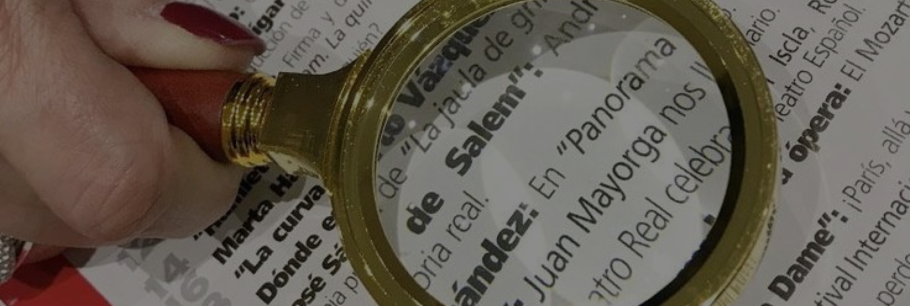

We’re a nonprofit organization focused on advocacy, education, empowerment, and community development, especially for women, youth, and underserved groups in Nigeria.

FAQ
Your support reaches further than you think.
We’re headquartered in Nigeria, but our programs serve multiple communities across several states.
Follow us on @olanikefoundation, subscribe to our newsletter, or check the Events section on our website.
Anyone who is passionate, committed, and aligned with our mission is welcome. You don’t need prior experience, just a willing heart.
No, volunteering is not paid. However, we occasionally offer stipends for travel or materials depending on the project and available funding.
Yes! Roles like social media advocacy, content creation, and virtual mentorship can be done remotely.
Absolutely. Active volunteers are issued a certificate and recognition letter upon request.
Yes. We send quarterly impact updates via email and post project highlights on our website and social media.
Currently, donations are not tax-deductible. We’ll update you if this changes.
Yes, you can specify a focus area, for example GBV support, Education, or Events.
Definitely. We welcome collaboration and sponsorships. Reach out via our Contact page or email us directly.
Yes, we do, especially school supplies and hygiene kits. Please contact us to confirm current needs before sending.